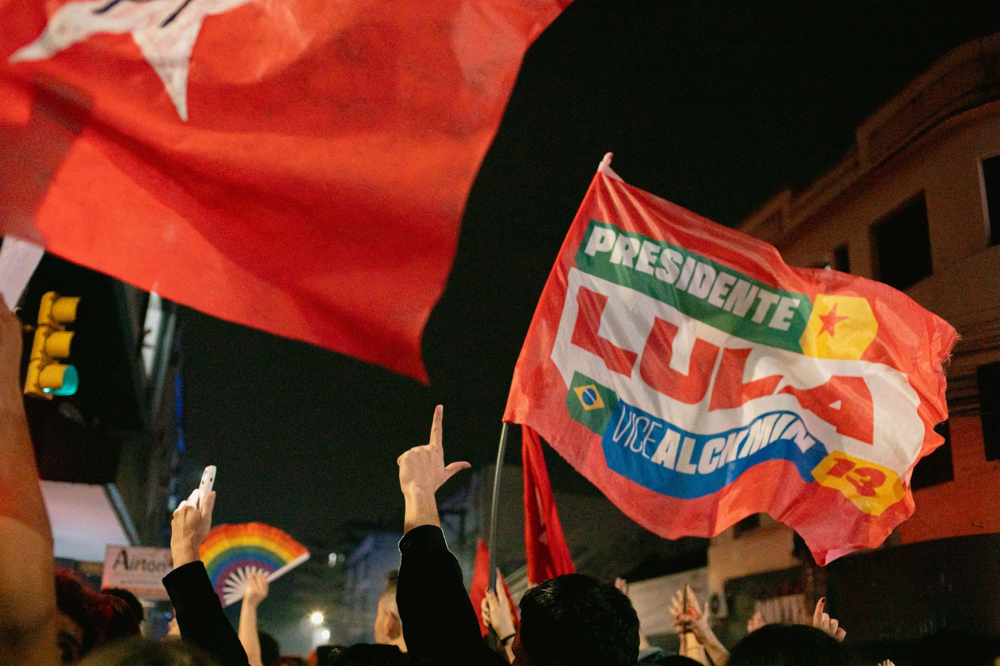

A historic political comeback
The recent presidential election in Brazil was more than just a change in leadership; it was a battle for the very soul of the nation. Luiz Inácio Lula da Silva, a former president who had previously faced legal challenges and imprisonment, managed to navigate a complex political landscape to reclaim the highest office in the land. His victory marks one of the most significant political turnarounds in modern South American history.
The campaign was characterized by intense polarization, with voters split between visions of social welfare and economic conservatism. Lula's ability to rebuild his coalition from the ground up allowed him to tap into the frustrations of millions of Brazilians who felt left behind by previous administrations. This resurgence was not merely about politics, but about a movement seeking to redefine the country's social contract.
The battle against the Bolsonaro legacy
Lula's primary opponent represented the continuation of the policies established by former president Jair Bolsonaro. The election was framed as a direct confrontation between the populist, right-wing movement led by the Bolsonaro family and the left-wing, social-democratic approach championed by Lula. The stakes were incredibly high, as both sides believed their victory would determine the long-term stability of Brazil's economy and democratic institutions.
The campaign tactics used by the opposing sides were starkly different. While the Bolsonaro camp focused on traditional values and aggressive rhetoric against institutional norms, Lula's team emphasized unity and the protection of democratic processes. This clash of ideologies kept the nation on edge throughout the voting period, with high turnout rates reflecting the passion of the electorate.
Strategic shifts in the campaign
To win, Lula had to expand his base beyond his traditional leftist supporters. He realized that to secure a majority, he needed to appeal to moderate voters and those in the center who were wary of the radicalism associated with the Bolsonaro administration. This required a delicate balancing act of promising social progress without alienating the business community or the more conservative rural sectors.
The victory was not just a win for the left, but a testament to the resilience of the democratic process in the face of extreme division.
By focusing on specific issues like food security and unemployment, Lula was able to connect with the daily struggles of the working class. His messaging shifted from purely ideological battles to practical solutions for the economic hardships facing many Brazilian households. This pivot proved crucial in capturing the undecided voters who ultimately swung the election in his favor.
Analyzing the voter turnout and demographics
Demographic data from the election suggests that the results were heavily influenced by shifts in urban and rural voting patterns. While the Bolsonaro-aligned candidates maintained strong support in many agricultural regions, Lula saw massive surges in large metropolitan areas and among minority groups who felt marginalized by the previous government's policies.
The youth vote also played a significant role in the outcome. Many younger Brazilians, concerned about climate change and social justice, mobilized in large numbers to support the change in leadership. This generational divide highlighted a growing gap in how different age groups perceive the future of the country and the responsibility of the state.
Looking toward a divided future
Despite the victory, Lula faces the monumental task of governing a nation that remains deeply divided. The transition of power has been tense, and the opposition remains vocal and organized. The new administration must find ways to implement its ambitious social agenda while managing a fractured Congress and a volatile global economic environment.
Reconciling the different visions for Brazil will be the defining challenge of the next four years. Whether Lula can bridge the gap between the polarized factions of society will determine if his presidency brings stability or further unrest. The eyes of the world are on Brazil to see how this historic comeback will shape the future of democracy in South America.
Global implications and final thoughts
The outcome in Brazil has ripple effects across the globe, particularly regarding environmental policy and international trade. A shift toward a more environmentally conscious administration could lead to new partnerships in the fight against deforestation. Furthermore, Brazil's role in regional politics and its relationship with major global powers will likely undergo significant adjustments under Lula's leadership.
As we follow the unfolding political drama across the world, it is clear that personal and political ties are constantly shifting. Much like how public figures navigate complex family and social dynamics, such as when Meghan Markle Cuts Ties with Father Amid Abuse Claims at https://dhyey.bond/blog/meghan-markle-cuts-ties-with-father-amid-abuse-claims/, political leaders must navigate the intricate webs of loyalty and betrayal to succeed. Stay tuned to Dhyey Bond for more updates on global events and deep dives into the stories shaping our world.
See Also
If you enjoyed this Current Events article, check out Meghan Markle Cuts Ties with Father Amid Abuse Claims for more useful reading.